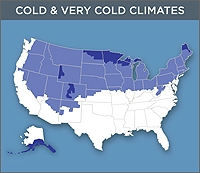

The U.S. Department of Energy (DOE) Building America program has developed a best practice guide and case studies to help builders improve whole-house energy performance in homes found in cold and very cold climates.
Best Practice Guide
Optimized Climate Solutions Tool
The Building America Solution Center now offers Optimized Climate Solutions, sets of climate-specific measures that builders can use to achieve energy savings of about 30% over the Building America B10 Benchmark (which is roughly consistent with the 2009 International Energy Conservation Code). The cold climate package of measures meets and exceeds DOE’s Zero Energy Ready Home program requirements. These measures were selected to help builders achieve high performance in energy savings, affordability, buildability, durability, and healthy indoor environment.
New Construction Case Studies
See examples of whole-house solutions for new homes throughout the U.S. cold and very cold climate zones.
|

Project: Stapleton Community - Denver
Builder: Various Builders
Profile: This case study describes the challenges associated with providing efficient hot water delivery systems in zero energy ready homes.
Project: Town Homes at Perrin's Row - Wheat Ridge
Builder: New Town Builders
Profile: This 26-unit multifamily project that features a HERS score of 54 without PV or 28 with PV won a 2015 Housing Innovation Award.
Project: Shenandoah Circle - Durango
Builder: Mantell-Hecathorn Builders
Profile: This 2015 Housing Innovation Award-winning production home features triple-pane windows, a 96 AFUE furnace, and 80% LED lighting.
Project: Burlingame Ranch Phase I — Aspen
Builder: Shaw Construction
Profile: This builder worked with Building Science Corporation to design affordable HERS-54 townhouses with central solar radiator space heating, PV, R-28 closed-cell spray foam under slab and R-26 in advanced framed walls, and rigid polyiso on inside of basement walls.
Project: Boulder ZED Design Build — Boulder
Builder: Boulder ZED Design Build
Profile: This case study describes a DOE Zero Energy Ready Home that was "recycled" from a 1950s ranch home structure and now features advanced framed walls, superior insulation, a ground-source heat pump, energy recovery ventilator, and triple-pane windows.
Project: A Production Builder's Passive House — Denver
Builder: Brookfield Homes
Profile: In this project, the builder worked with IBACOS to create a Passive House-certified model home and evaluate advanced building technologies; the home will be used as a marketing tool for potential homebuyers.
Project: The ArtiZEN Plan — Denver
Builder: New Town Builders
Profile: The Grand Winner in the Production Builder category of the 2014 Housing Innovation Awards, this builder plans to convert all of its product lines to DOE Zero Energy Ready Home construction by the end of 2015. This home achieves HERS 38 without PV and HERS -3 with 8.0 kw of PV.
Project: The Hale Plan — Denver
Builder: New Town Builders
Profile: All homes in the Stapleton community must be ENERGY STAR certified; New Town Builders has announced that it will build 250–300 new homes over the next 7–10 years, all of which will be DOE Zero Energy Ready Homes.
Project: Meeting DOE Challenge Home Program Certification — Denver
Builder: David Weekley Homes
Profile: In this project, the builder partnered with Building Science Corporation to evaluate the certification of new homes to the DOE Challenge Home (now Zero Energy Ready Homes) certification.
Project: New Town Builders' Power of Zero Energy Center — Denver
Builder: New Town Builders
Profile: To attract a wide range of potential home buyers to its energy efficient homes, New Town Builders created a "Power of Zero Energy Center" linked to its model home in the Stapleton community of Denver
Project: Hickory Drive - South Glastonbury
Builder: Glastonbury Housesmith
Profile: This 2015 Housing Innovation Award-winning custom home achieved a HERS score of 29 without PV and -23 with PV using blown fiberglass insulation, a sealed attic, and a ground source heat pump.
Project: Taft School - Watertown
Builder: BPC Green Builders
Profile: The builder of this teacher's residence at the Taft School won a custom home honor in the 2015 Housing Innovation Awards. The house was able to achieve a HERS score of 33 without PV or HERS -14 with PV through exceptional construction, including 8.5” double 2x4 walls with 8.5” (R-32) blown cellulose plus R-6 rigid foam.
Project: Trolle Residence - Danbury
Builder: BPC Green Builders
Profile: The builder of this 1,650-ft2 cabin won a Custom Home honor in the 2014 Housing Innovations Awards. The home meets Passive House Standards with 5.5-in. of foil-faced polysiocyanurate foam boards lining the outside walls, R-55 of rigid EPS foam under the slab, R-86 of blown cellulose in the attic, triple-pane windows, and a single ductless heat pump to heat and cool the entire home.
Project: Singer Village — Derby
Builder: Brookside Development
Profile: This DOE Zero Energy Ready Home is one of a development of seven two-story homes that garnered a Production Builder award in the 2014 Housing Innovation Awards. Exceptional construction quality allowed the home to achieve a HERS score of 45 without PV, or HERS 26 with a 7-kW PV system included.
Project: Singer Village: A Cold Climate Zero Energy Ready Home — Derby
Builder: Brookside Development
Profile: This case study describes the technical details of the construction of Brookside Development's zero energy ready home, with help from the Consortium for Advanced Residential Buildings. Cost comparison with similar homes is also provided.
Project: Hamilton Way — Farmington
Builder: Nelson Construction
Profile: The builder worked with Building Science Corporation to design ten HERS 53 homes with ICF foundations, foam-sheathed above-grade walls, and high-efficiency furnaces with fresh air intake and jump ducts.
Project: Candlewood Hills Rebuild — New Fairfield
Builder: BPC Green Builders
Profile: This LEED Platinum home was built on the site of a 60-year-old bungalow that was demolished. It boasts views of Candlewood Lake, a great deal of daylight, and projected annual energy savings of almost $3,000.
Project: Preferred Builders — Old Greenwich
Builder: Preferred Builders
Profile: Winner of a 2013 Housing Innovation Award, the first DOE Challenge Home built in New England features cool-roof shingles, HERS 20–42, and walls densely packed with blown fiberglass.
Project: The Performance House — Old Greenwich
Builder: Preferred Builders
Profile: This case study describes the philosophy and science behind the development of this high-performance test house.
Project: Shore Road Project — Old Greenwich
Builder: Murphy Brothers Contracting
Profile: This DOE Zero Energy Ready Home boasts insulated concrete form walls, energy recovery ventilator, duel-fuel heat pump, instantaneous condensing water heater, and 4.5-kW solar shingles.
Project: Field Performance of Inverter-Driven Heat Pumps in Cold Climates
Builder: Efficiency Vermont
Profile: The DOE Building America team Consortium for Advanced Residential Buildings (CARB) monitored seven inverter-driven ASHPs across the northeast United States during the winter of 2013-2014.
Project: Combustion Safety Simplified Test Protocol
Builder: Partnership for Advanced Residential Retrofit and NorthernSTAR
Profile: The simplified test procedure, a new combustion safety test, reduces false positives and eliminates the cost of replacing atmospheric appliances in some cases.
Project: The Adaptation Home - Geneva
Builder: Evolutionary Home Builders
Profile: This custom home, which features blown fiberglass and 4" polysio rigid foam, a vented attic with R-100 blown cellulose, and a heat pump water heater, won a 2015 Housing Innovation Award.
Project: McCormick Avenue - Brookfield
Builder: BrightLeaf Homes
Profile: Winner of a 2015 Housing Innovation Award, this production home features a vented attic with spray foam top plates and R-60 blown blown cellulose.
Project: Field Testing an Unvented Roof with Asphalt Shingles in a Cold Climate
Builder: K. Hovanian Homes
Profile: In this project, Building Science Corporation devised an experiment to build and instrument unvented test roofs using air-permeable insulation (dense-pack cellulose and fiberglass) in a cold climate (Chicago, Illinois area, zone 5A) and to analyze the moisture effects over time.
Project: Meeting DOE Challenge Homes Program Certification — Chicago
Builder: K. Hovnanian Homes
Profile: In this project, the builder partnered with Building Science Corporation to evaluate the certification of new homes to the DOE Challenge Home (now Zero Energy Ready Homes) certification.
Project: Illinois First Challenge Home — Downers Grove
Builder: Weiss Building & Development, LLC
Profile: Winner of a 2013 Housing Innovation Award, this single-family home built in a peat bog has underground storage tanks and drainage tanks, blown fiberglass insulation, coated rigid polyisocyanurate, and flashing.
Project: School Street Homes — Libertyville
Builder: StreetScape Development, LLC
Profile: Winner of a 2013 Housing Innovation Award, these single-family, HERS 45 homes incorporate 2 × 6 wood framed walls with R-20 open cell spray insulation and OSB.
Project: Chicagoland's First Certified Passive House — River Forest
Builder: Weiss Building & Development, LLC
Profile: This single-family, HERS 27 home incorporates insulated concrete form walls and polyisocyanurate rigid insulation; the builder won a 2013 Housing Innovation Award.
Project: Healthy Efficient Homes - Spirit Lake
Builder: Healthy Efficient Homes, LLC
Profile: This DOE Zero Energy Ready Home features advanced framed walls, a vented attic with spray foam-sealed top plates and blown fiberglass over the ceiling deck, R-23 insulated concrete form basement walls, a mini-split heat pump, fresh air fan intake, and a solar hot water heater.
Project: BrightBuilt Home, Modular Zero Energy—Portland
Builder: BrightBuilt Home
Profile: When done well, modular home production can provide lower costs and excellent quality control—compared to conventional home building methods— while still allowing a great deal of customization.
Project: Near Zero Maine II Home — Vassalboro
Builder: Thomas Fullman
Profile: This single-family Challenge Home was built at low cost with a ductless heatpump, ERV, PV on detached garage, solar water heater, double walls, and vapor retarder air barrier.
Project: Wisdom Way Solar Village—Greenfield
Builder: Rural Development, Inc.
Profile: The CARB team was able to monitor the performance of one of the solar domestic hot water systems for more than two years, finding that the system monitored provided 80% of the water heating energy needed.
Project: MassDevelopment Devens Green Zero-Energy Community Custom Home — Devens
Builder: Transformations, Inc.
Profile: Winner of a 2013 Housing Innovation Award in the Custom category, this single-family home features a superinsulated shell with 12-inch double walls filled with open cell spray foam, as well as R-5 triple-pane windows.
Project: MassDevelopment Devens Green Zero-Energy Community Production Home — Devens
Builder: Transformations, Inc.
Profile: New houses in three developments incorporate specific assemblies and specifications to achieve a 44.9% reduction in energy use compared with a home built to the 2009 International Residential Code. This home was a winner in the Production category of the 2013 Housing Innovation Awards.
Project: Meeting DOE Challenge Homes Program Certification — Devens
Builder: Transformations, Inc.
Profile: In this project, the builder partnered with Building Science Corporation to evaluate the certification of new homes to the DOE Challenge Home (now Zero Energy Ready Homes) certification.
Project: Transformations, Inc. Net Zero Energy Communities — Devens, Easthampton, Townsend
Builder: Transformations, Inc.
Profile: In 2009, Transformations, Inc. partnered with the Building Science Corporation team to build new net zero energy houses in three developments in Massachusetts that achieve a 45% reduction in energy use compared to 2009 International Residential Code.
Project: Wisdom Way Solar Village — Greenfield
Builder: Rural Development, Inc.
Profile: This builder worked with Consortium for Advanced Residential Buildings to design affordable HERS-8 homes (60 w/o PV), with double-stud walls heavy insulation, low-load sealed-combustion gas space heaters, triple-pane windows, solar water heating, and PV.
Project: Cold Climate Market-Rate Townhomes Targeting HERS Index of 40 — Harvard
Builder: Metric Construction
Profile: Twelve townhomes constructed at a decommissioned army base incorporated efficiency upgrades to achieve a HERS Index score of 41 before adding renewables.
Project: Field Performance of Inverter-Driven Heat Pumps in Cold Climates
Builder: Efficiency Vermont
Profile: The DOE Building America team Consortium for Advanced Residential Buildings (CARB) monitored seven inverter-driven ASHPs across the northeast United States during the winter of 2013-2014.
Project: 2014 Model Home — Midland
Builder: Cobblestone Homes
Profile: This builder's first DOE Zero Energy Ready Home won a Custom Builder award in the 2014 Housing Innovation Awards, scored HERS 49 without PV or HERS 44 with 1.4 kW of PV, and served as a prototype and energy efficiency demonstration model while performance testing was conducted.
Project: Affordable Cold Climate Infill Housing with Hybrid Insulation Approach — Wyandotte
Builder: Various local homebuilders
Profile: The City of Wyandotte started a construction program to engage local builders in constructing energy-efficient homes in existing neighborhoods for less than $100/ft2.
Project: Combustion Safety Simplified Test Protocol
Builder: Partnership for Advanced Residential Retrofit and NorthernSTAR
Profile: The simplified test procedure, a new combustion safety test, reduces false positives and eliminates the cost of replacing atmospheric appliances in some cases.
Project: Advanced Controls Improve Performance of Combination Space- and Water-Heating Systems—Minneapolis
Builder: University of Minnesota and The Energy Conservatory
Profile: This project demonstrated that improved controls have the potential to reduce some of this complexity and boost the measured performance of combination space- and water-heating systems.
Project: Fishers Circle - Vadnais Heights
Builder: Amaris Homes, LLC
Profile: This project garnered a custom home honor from the 2015 Housing Innovation Awards and features a HERS score of 47 without PV and 22 with PV.
Project: Amaris Custom Homes — St. Paul
Builder: Amaris Homes, LLC
Profile: In this project, the NorthernSTAR Building America Partnership helped the builder to develop the first Zero Energy Ready Home in Minnesota's cold climate using reasonable, cost-effective, and replicable construction materials and practices.
Project: Anna Model - Omaha
Builder: Charles Thomas Homes
Profile: This project won a custom home honor from the 2015 Housing Innovation Awards using R-23 blown fiberglass in the walls and basement with R-20 around the slab and R-38 under the slab, as well as R-100 blown cellulose in the vented attic.
Project: Las Vegas Division, Pulte Homes — Las Vegas
Builder: Pulte Homes
Profile: The builder teamed with Building Science Corporation to design HERS-54 homes with high-efficiency HVAC with ducts in conditioned space, jump ducts, and a fresh air intake; advanced framed walls; low-e windows; and PV roof tiles.
Project: Multifamily Zero Energy Ready Home Analysis—Elmsford
Builder: AvalonBay Communities
Profile: Building America team ARIES worked with AvalonBay to redesign a three-building complex project to comply with Zero Energy Ready Home (ZERH) criteria.
Project: Columbia County Habitat for Humanity Passive Townhomes—Hudson
Builder: Columbia County Habitat for Humanity
Profile: Building off of previous efforts, this 2014 set of Passive Townhomes is the most recent of three Passive House projects intended as case studies of various construction approaches.
Project: Green Acres #20, #26, #28
Builder: Greenhill Contracting
Profile: This project, which involved three custom homes, won a 2015 Housing Innovation Award with HERS scores of 26, 28, and 26 without PV or -3, -1, and -3.5 with PV.
Project: Holly Creek Townhouses
Builder: Ithaca Neighborhood Housing Services
Profile: With help from Consortium for Advanced Residential Buildings, Ithaca Neighborhood Housing Services evaluated a hybrid ventilation method through long-term field monitoring of temperature, humidity, and pressure conditions within the crawl spaces of two homes (one occupied and one unoccupied) in New York state.
Project: EcoVillage — Ithaca
Builder: AquaZephyr
Profile: This two-story, 1,664 ft2.home is one of 17 single-family and four duplex homes built as part of an energy-efficient cooperative. Winner in the Production Builder category of the 2014 Housing Innovation Awards, the home achieves a HERS 56 without PV and HERS 15 with 4 kw of PV.
Project: EcoVillage: A Net Zero Energy Ready Community — Ithaca
Builder: AquaZephyr
Profile: With help from Consortium for Advanced Residential Buildings, EcoVillage completed their third neighborhood—the Third Residential EcoVillage Experience. The community is pursuring DOE Zero Energy Ready Home, U.S. Green Building Council Leadership in Energy and Environmental Design (LEED) Gold, and ENERGY STAR certifications for the entire project.
Project: Holly Creek Lane — Ithaca
Builder: Ithaca Neighborhood Housing Services
Profile: Eleven new townhomes comply with EPA's airPLUS criteria and use EPA WaterSense-qualifying features. Foundation walls are insulated on the exterior with XPS insulation. Non-shared walls use wall panels that were produced offsite.
Project: The Preserve — New Paltz
Builder: Greenhill Contracting
Profile: These super-insulated homes all have R-22 insulated concrete form walls, R-20 closed-cell spray form under the slab, ground source heat pump, tight air sealing, and more—helping this buider to win a Production Builder award in the 2014 Housing Innovation Awards.
Project: Ferguson Design and Construction - Sagaponack
Builder: Ferguson Design and Construction
Profile: This DOE Challenge Home scored HERS 43 without PV and features R-25 double-stud walls, a hydro air system with 91% efficient boiler for forced air and radiant floor heat, and 100% LED lights.
Project: Challenges of Achieving 2012 IECC Air Sealing Requirements in Multifamily Dwellings - Upstate New York
Builder: LECESSE Construction Company, Housing Visions
Profile: In this project, the Consortium for Advanced Residential Buildings team sought to create a well-documented design and implementation strategy for air sealing in low-rise multifamily buildings that would assist in compliance with new building infiltration requirements of the 2012 IECC.
Project: Chamberlain Court #75 - Gettysburg
Builder: High Performance Homes
Profile: This 2015 Housing Innovation Award-winning production home features R-24 SIP walls, a basement with R-10 under slab and R-15 unfaced batt on the walls, and a sealed attic with R-49 closed-cell spray foam under the roof deck.
Project: Lancaster County Career and Technology Center Green Home 3 - Mount Joy
Builder: LCCTC
Profile: In this project, Home Innovation Research Labs worked with the Lancaster County Career and Technology Center to build a high performance home that achieved 44% whole-house energy savings over the Building America Benchmark DOE Zero Energy Ready Home certification, and National Green Building Standard Gold-level certification.
Project: East Liberty - Pittsburgh
Builder: S&A Homes
Profile: This builder worked with IBACOS to design urban infill HERS-51 homes with compact duct layout in conditioned space, foam insulated precast concrete foundations, high-efficiency HVAC, and tankless water heaters
Project: Evaluating Through-Wall Air Transfer Fans - Pittsburgh
Team: IBACOS
Profile: This project assessed a strategy for providing conditioned air to rooms when the doors were close and measured data—for the first time—for the frequency of potential thermal discomfort the occupants may experience when using this strategy.
Project: Church Community and Housing Corporation — Charlestown
Builder: Caldwell and Johnson
Profile: This DOE Zero Energy Ready Home garnered an Affordable Builder award in the 2014 Housing Innovation Awards, for its highly insulated construction, minisplit heat pump and water heater, and triple pane windows.
Project: Edies Lane House — Exeter
Builder: Caldwell and Johnson
Profile: This house, a 2013 Housing Innovation Award winner, should save its owners $600 per year over the 2009 IECC with the help of efficiency measures such as walls with OSB sheathing and R-13 open cell spray foam insulation.
Project: Garbett's Net Zero-Energy Home at Rosecrest — Herriman
Builder: Garbett Homes
Profile: As the first net zero-energy production home certified in Utah, this house incorporates two 94% efficient tankless water heaters and two roof-mounted solar panels that preheat the home's water supply.
Project: Field Performance of Inverter-Driven Heat Pumps in Cold Climates
Builder: Efficiency Vermont
Profile: The DOE Building America team Consortium for Advanced Residential Buildings (CARB) monitored seven inverter-driven ASHPs across the northeast United States during the winter of 2013-2014.
Existing Homes Case Studies
See examples of whole-house solutions for existing homes throughout the U.S. cold and very cold climate zones. |

Project: Evaluation of a Low-Rise Multifamily Retrofit — Boulder
Building Component: Building envelope, lighting, appliances, water conservation
Profile: A 37-unit apartment complex underwent multiple energy retrofit measures, including attic and wall insulation, low-e windows, and energy-efficient appliances, to comply with the Boulder SmartRegs Ordinance.
Project: Retrofitting a 1960s Split-Level Cold-Climate Home
Building Component: Building envelope, lighting, ENERGY STAR® appliances
Profile: CARB partnered with Preferred Builders and the owners of a 1960s split-level home in Westport, Connecticut, to evaluate and implement a cost-effective solution package to reduce energy use and costs by 30%.
Project: Field Performance of Inverter-Driven Heat Pumps in Cold Climates
Builder: Efficiency Vermont
Profile: The DOE Building America team Consortium for Advanced Residential Buildings (CARB) monitored seven inverter-driven ASHPs across the northeast United States during the winter of 2013-2014.
Project: Quantifying the Financial Benefits of Multifamily Retrofits—Chicago
Building Componenets: Various energy-efficiency retrofits
Profile: Research revealed that the average net operating income from 13 Chicago buildings increased by 1.6% post-retrofit and that national data sets do not accurately represent the income and expense data of Chicago’s multifamily buildings.
Project: Evaluation of Missed Energy Saving Opportunity Based on Illinois Home Performance Program Field Data: Homeowner Selected Upgrades vs. Cost-Optimized Solutions - Chicago
Building Component: Envelope
Profile: Partnership for Advanced Residential Retrofit team compared measure packages installed during 800 Illinois Home Performance with ENERGY STAR® residential retrofits to those recommended as cost-optimal by Building Energy Optimization (BEopt) modeling software.
Project: Conway Street Apartments - Greenfield
Builder: Olive Street Development
Profile: In this project, the Consortium for Advanced Residential Buildings team provided technical support to the conversion of a 100-year-old school building into 12 high performance apartments.
Project: Multifamily Individual Heating and Ventilation Systems — Lawrence
Builder: Merrimack Valley Habitat for Humanity
Profile: The conversion of an older Massachusetts building into condominiums illustrates a safe, durable, and cost-effective solution for heating and ventilation systems in multifamily buildings.
Project: National Grid Deep Energy Retrofit Pilot - Massachusetts and Rhode Island
Builder: Various
Profile: Building Science Corporation developed a package of high-efficiency measures for retrofit of 42 homes sponsored by National Grid, resulting in energy use of approximately 40% below the Northeast regional average.
Project: Field Performance of Inverter-Driven Heat Pumps in Cold Climates
Builder: Efficiency Vermont
Profile: The DOE Building America team Consortium for Advanced Residential Buildings (CARB) monitored seven inverter-driven ASHPs across the northeast United States during the winter of 2013-2014.
Project: Solar Water Heating in Multifamily Buildings
Builder: Olive Street Development
Profile: Olive Street Development completed partnered with Building America team Consortium for Advanced Residential Buildings (CARB) completed a major renovation project—converting an old school building into 12 high-performance apartments.
Project: Demonstration House of Cold-Climate Solutions for Affordable Housing
Builder: Urban Homeworks
Profile: To maximize efficiency of application and address budget issues, Building America team NorthernSTAR worked with Urban Homeworks to identify ways to use volunteers and construction training programs to install three DOE Building America performance measures.
Project: Islip Housing Authority Energy Efficiency Turnover Protocols — Islip
Builder: Islip Housing Authority
Profile: In this project, the ARIES Collaborative worked with two public housing authorities (PHA) to develop packages of energy efficiency retrofit measures the PHAs can cost effectively implement at the time when units are refurbished between occupancies.
Project: Exterior Insulation Pre- and Post-Retrofit — Syracuse
Builder: GreenHomes America
Profile: In this project, IBACOS worked with the builder and New York State Energy Research and Development Authority to study three exterior wall insulation strategies that could be implemented as part of overall deep energy retrofits.
Project: Philadelphia Housing Authority Energy-Efficiency Turnover Protocols
Builder: Philadelphia Housing Authority
Profile: The Philadelphia Housing Authority worked with the Building America team ARIES to integrate energy-efficiency measures into the refurbishment process that each unit normally goes through between occupancies.
Project: Field Performance of Inverter-Driven Heat Pumps in Cold Climates
Builder: Efficiency Vermont
Profile: The DOE Building America team Consortium for Advanced Residential Buildings (CARB) monitored seven inverter-driven ASHPs across the northeast United States during the winter of 2013-2014.
Project: Retrofit of 1915 Home — Dayton
Builder: Homeowner
Profile: In this project, Pacific Northwest National Laboratory audited a historic home for an energy retrofit, leaving the diesel boiler in place, but adding a new SEER 16, HSPF 9.4 ductless heat pump with four inside heads, cutting energy costs more than $2,000/year.
Project: Optimized Slab-on-Grade Foundation Insulation Retrofits
Profile: This project used a recently developed, three-dimensional, below-grade heat transfer simulation (BUilding Foundation Energy Transport Simulation–BCVTB, BUFETS-B) that operates as a subroutine of EnergyPlus to model 10 insulation upgrade options against a base (uninsulated) case.
You may also find case studies and guides that work across all climates on the All Climates page.
For additional, updated information on hundreds of building science topics that can help you build or retrofit to the most recent high-performance construction criteria, including the latest version of ENERGY STAR and the DOE Challenge Home requirements, see the Building America Solution Center.